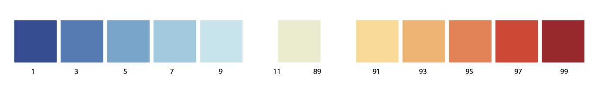

Visualizing (Un)certainty in Machine Learning Predictions
Representing how confident a user should be in the result of a machine learning prediction
Send
Click
Send
to get the probablity of your input
here will be a proper legend

About